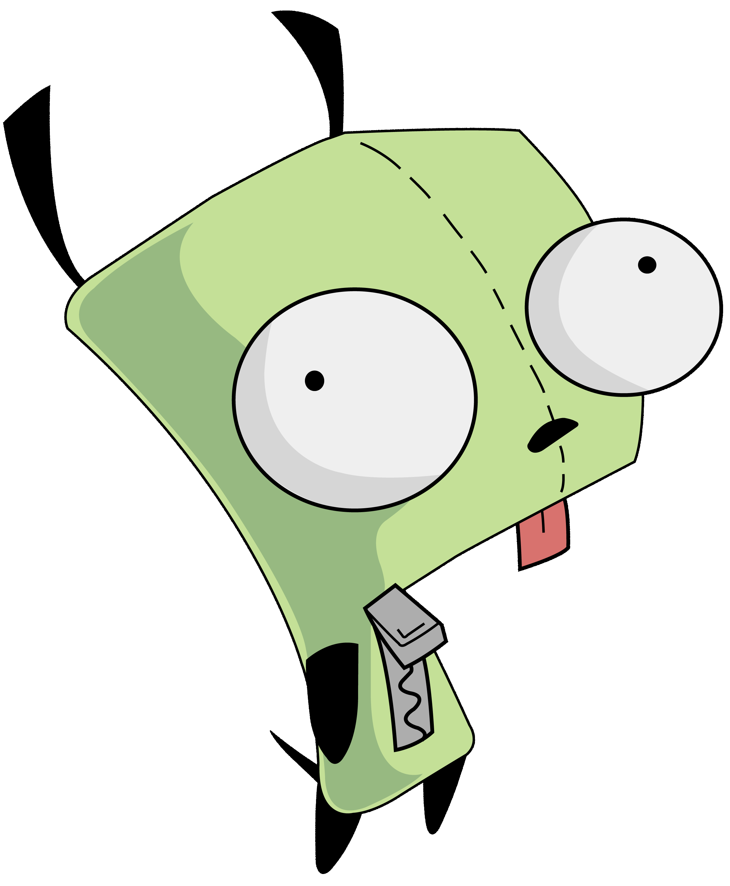

My name is Ian Lapaglia. I am a Junior at the University of Houston-Downtown. When I graduate I intend to pursue a career in cybersecurity. With computers becoming becoming the heart of modern society, being used in just about every aspect of our lives, it is imperative that those computers be protected from bad actors, no matter who they may be. There is no circumstance where people should be worried about someone breaking into their device and gaining access to their data. As a cybersecurity professional, it would be my job to prevent that.
On a more personal note, I enjoy reading, frogs, and messing around with computers. I mostly read fantasy books like Lord of the Rings and Mistborn. Although I do not have any frogs myself, I do often see them in my backyard. The way they hop around is quite amusing, and they do not seem to get bothered, even when a dog is sniffing at them. As for computers, I am currently experimenting with Linux operating systems. More specifically, I am working on customizing the desktop with the Hyprland windows manager.
| Situation | Apple | Orange | Banana | Lemon |
|---|---|---|---|---|
| Stored in bag | 7/10 | 10/10 | 4/10 | 7/10 |
| On a Walk | 5/10 | 3/10 | 7/10 | 5/10 |
| Taste | 8/10 | 8/10 | 6/10 | 10/10 |